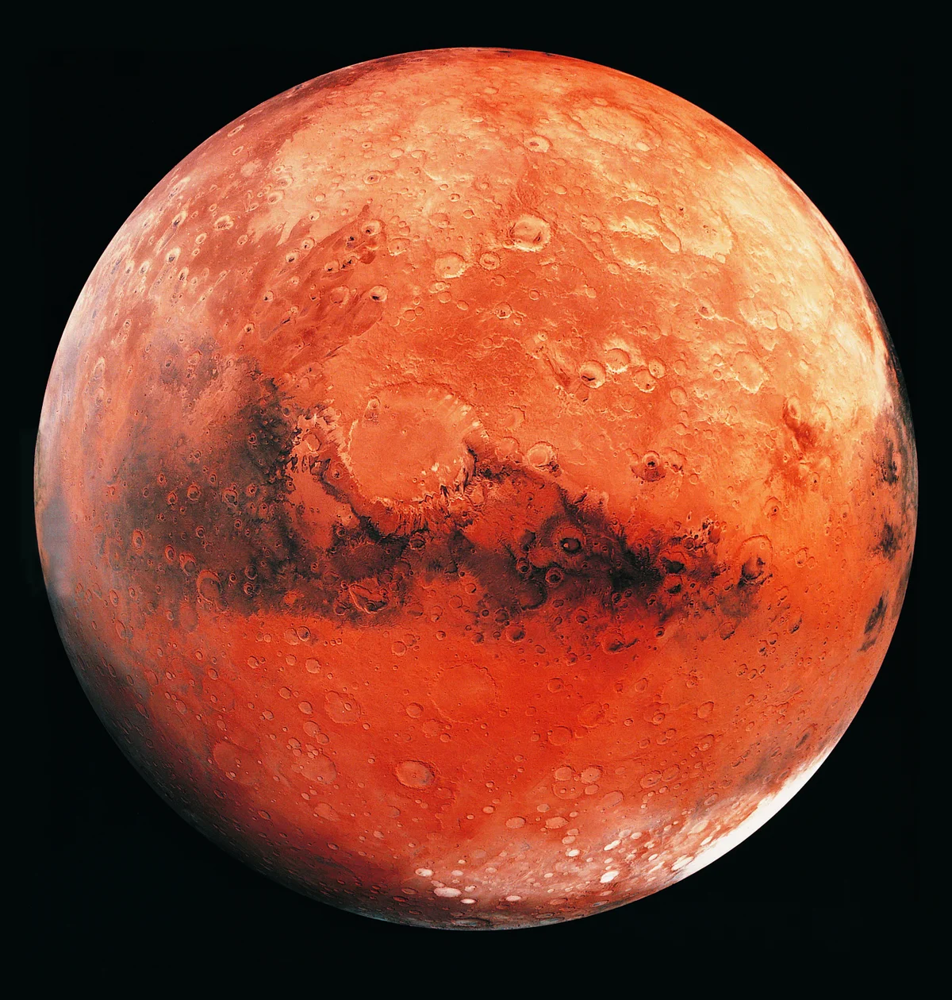

Mars

Mars is the fourth planet from the Sun and the second-smallest planet in the Solar System, being larger than only Mercury. It is often referred to as the "Red Planet" because of its reddish appearance.
Interesting Facts about Mars
- Mars has a thin atmosphere composed mainly of carbon dioxide, with traces of nitrogen and argon.
- Mars has two small moons, Phobos and Deimos.
- Mars has the largest volcano in the Solar System, Olympus Mons, and the longest canyon, Valles Marineris.
- Mars experiences seasons similar to Earth due to its axial tilt.
- A day on Mars (one rotation) takes about 24.6 hours.
- A year on Mars (one orbit around the Sun) takes about 687 Earth days.
Home